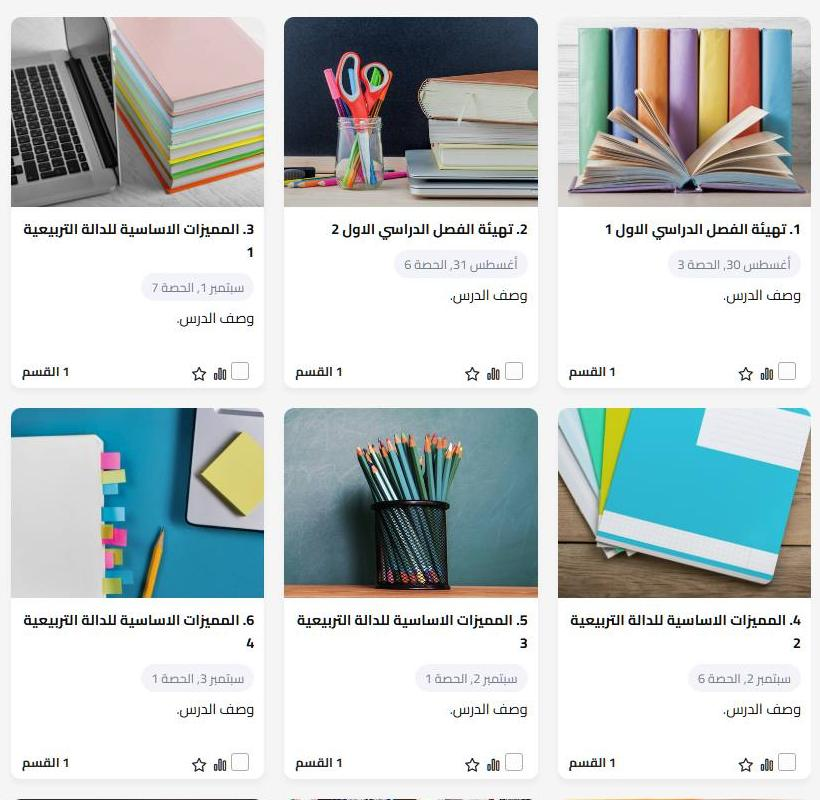
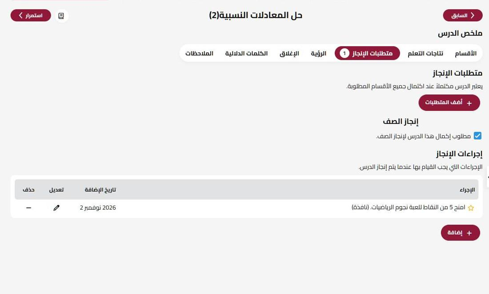
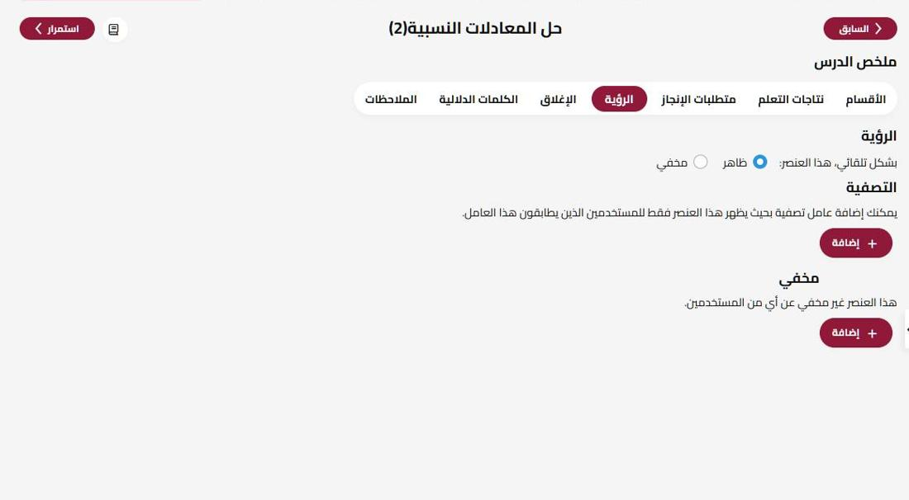
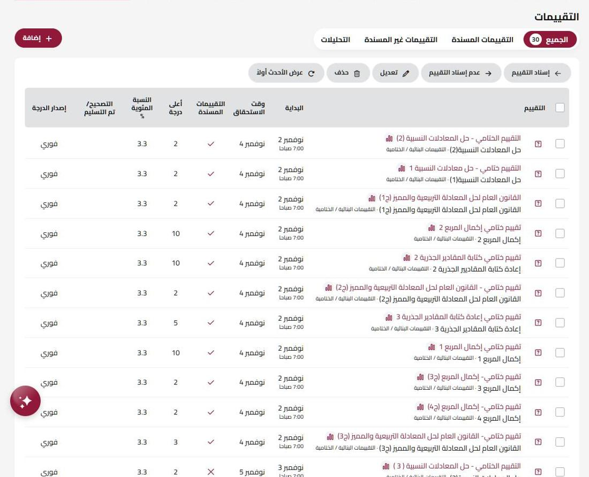

تحليل SWOT لمنصة قطر للتعليم
تقييم استخدام المنصة في صفّي الرياضيات 10/3 و12/2: نقاط القوة والضعف في الداخل، والفرص والتهديدات من الخارج، ثم استراتيجيات تربط بينها لرفع تحصيل الطالب وتطوير الأتمتة.
الملخص التنفيذي
الخلاصة: المنصة قوية الأدوات، والأتمتة أنهت تجهيز الصفين: التواريخ والإسناد والنشر والنقاط والتحقق. الضعف الحاسم في التفاعل والقياس: الطلاب لا يدخلون، والإتقان لا يُحسب لأن التقييمات غير مربوطة بالنتاجات، ونصف البطاقات بلا هوية. أكبر الفرص في أدوات موجودة لم تُستثمر بعد: الشارات، وتنبيهات أولياء الأمور، وصورة البطاقة بالذكاء الاصطناعي، والتشغيل الآلي المدمج. أبرز التهديدات أن الصف مملوك لمعلم آخر، وأن تغيّر واجهة المنصة قد يكسر الأتمتة.
مصفوفة SWOT
الداخلي: ما في الصفين وطريقة استخدامنا للمنصة. الخارجي: ما تتيحه المنصة والبيئة أو تفرضه.
Sنقاط القوة
داخلية · إيجابية
- أدوات متكاملة: دروس بأقسام تفاعلية، وتقييمات، وخريطة إتقان، وتلعيب، وتحليلات، وتشغيل آلي.
- الدروس 25 فما بعد نموذجية: صورة من المحتوى، ووصف بالأهداف، و5–6 أقسام تنتهي بتقييم.
- الأتمتة مكتملة للتجهيز: 10/3: 23 درسًا أُظهر و26 بنقاط؛ 12/2: 31 و31؛ بلا إخفاق.
- ظهور منضبط بالتاريخ: الدرس الحالي يُعيَّن تلقائيًا وما بعده مخفي حتى موعده.
- تحقق من منظور الطالب: كل نشر يُقارن بما يراه الطالب فعلًا.
- مصادر أساسية جاهزة: كتاب الطالب، والكتاب التفاعلي، والآلة الحاسبة، ودليل STEM.
Wنقاط الضعف
داخلية · سلبية
- تفاعل شبه معدوم: نحو 3 طلاب فتحوا الدروس 1–14، أغلبهم 0–1 دقيقة، ولا أحد بعدها.
- إتقان صفري: نتاجات كثيرة بلا تقييمات؛ 10.3.x بلا تقييم، والمصفوفات 10.4.x غير مغطاة.
- بطاقات الدروس 1–24 ضعيفة: صور عامة، ووصف «وصف الدرس.»، وقسم واحد.
- تلعيب خامل: 3 لاعبين، و0 شارات، و235 نقطة فقط.
- إنجاز الصف معطّل: لا تحقق تلقائي ولا شهادة، ولا تسلسل.
- واجهة الصف غير مخصّصة: عناصر ترحيب افتراضية، والصف يظهر «غير منشور».
Oالفرص
خارجية · إيجابية
- صورة البطاقة بالذكاء الاصطناعي في المحرر السريع، ووكيل CYPHER الذكي.
- تبويب أولياء الأمور مفعّل ويمكن أن يحمل تنبيهات التقدم والتأخر.
- قواعد إنجاز أوسع: شارات ومستويات وشهادة عند إنجاز الوحدة أو الصف.
- تشغيل آلي مدمج يدعم رسائل التأخر والدرجة المنخفضة دون تشغيل يومي منا.
- بيانات قابلة للقراءة (تحليلات، إنجاز، إتقان) تكفي لتقرير أسبوعي آلي.
- تعميم الأتمتة على معلمين ومواد أخرى بالبنية نفسها.
Tالتهديدات
خارجية · سلبية
- ملكية الصف لمعلم آخر: الإعدادات والهيكل قراره، وأي تغيير يحتاج تنسيقًا.
- تغيّر واجهة المنصة قد يكسر قراءة الصفحات، فالأتمتة تقرأ HTML لا واجهة برمجية.
- إشارات غير موثوقة: ثبت أن شارة «شخصى» قد تبقى على درس ظاهر (الدرس 31).
- الجلسة والدخول: الدخول يدوي وقد تنتهي الجلسة أثناء التشغيل.
- الخصوصية: بيانات الطلاب تحت PDPPL، وأي تقرير مشترك يجب أن يخلو من الأسماء.
- موثوقية التحليلات: قد تشمل حسابات تجريبية، فلا تُبنى عليها قرارات فردية دون تحقق.
الاستراتيجيات (TOWS)
كل استراتيجية تربط بندين من المصفوفة، وتتحول إلى إجراء محدد في الأقسام التالية.
S·O استثمار القوة في الفرص
- إضافة قواعد الشارات والمستويات آليًا بنمط النقاط نفسه (اقتراح، موافقة، تطبيق، تحقق).
- بناء تقرير تعلم أسبوعي من التحليلات والإنجاز والإتقان، للقراءة فقط.
- تعميم الأتمتة على مواد أخرى بعد اكتمال قالب الخطة.
W·O علاج الضعف بالفرص
- تجويد بطاقات 1–24 بصورة الذكاء الاصطناعي أو قالب الوحدة، ووصف من أهداف الخطة.
- تنبيهات أولياء الأمور والتشغيل الآلي لرفع الدخول والإنجاز.
- شهادة وإنجاز تلقائي للوحدة ليصبح للتقدم معنى مرئي.
S·T القوة في وجه التهديد
- مرحلة التحقق تكشف أي تغيّر في المنصة فور حدوثه؛ واختبارات العينات تثبّت المحلّلات.
- نمط الاقتراح والموافقة يجعل كل تغيير قابلًا للعرض على مالك الصف قبل تنفيذه.
- الاعتماد على التبويب المرجعي لا على الشارات (كما في الرؤية).
W·T تقليل الضعف وتجنب التهديد
- المراحل الجديدة تبدأ قراءة فقط، والكتابة لاحقًا وبموافقة لكل عملية.
- اقتراح ربط التقييمات بالنتاجات على المالك بقائمة جاهزة بدل التغيير المباشر.
- بيانات الطلاب محلية فقط، والتقارير المشتركة مجمّعة بلا أسماء.
الأدلة من جولة المنصة
كل لقطة مصنّفة بالبند الذي تدعمه. اضغط اللقطة لتكبيرها.










خدمة الطالب ورفع تحصيله
المعيار الواحد لكل إجراء: هل زاد عدد الطلاب الذين ينجزون درس اليوم؟
| الأولوية | الإجراء | الاستراتيجية | الأثر على الطالب | المنفّذ |
|---|---|---|---|---|
| P1 | ربط كل تقييم بنتاج، وتقييمات قصيرة لنتاجات 10.3.x و10.4.x | W·T | يرى إتقانه لكل مهارة ويعرف ما يراجع | المالك؛ الأتمتة تكشف الفجوات |
| P1 | تقييم قصير (3–5 أسئلة) في نهاية كل درس من 1–24 | W·O | تغذية راجعة فورية | المعلم |
| P1 | شارات: «أنجز وحدة»، «5 دروس متتالية»، «إتقان 80%» | S·O | هدف قريب ودافعية مرئية | المالك، ثم القواعد آليًا |
| P2 | إنجاز تلقائي للصف وشهادة | W·O | نهاية واضحة ومكافأة | المالك |
| P2 | رسائل آلية: تأخر الواجب، تشجيع، دعم عند درجة منخفضة | W·O | متابعة شخصية بلا عبء | الأتمتة بموافقة |
| P2 | تنبيهات أولياء الأمور بالتأخر والتقدم الأسبوعي | W·O | دعم من البيت | المالك يفعّل |
| P2 | بنك تدريب متدرج لكل وحدة: علاجي وإثرائي | S·O | تمايز حسب المستوى | المعلم |
| P3 | تسلسل الأقسام أو مسار تعلم، بعد تجربة على وحدة | W·T | لا قفز إلى التقييم قبل الشرح | المالك |
| P3 | صفحة رئيسية مخصصة: درس اليوم، الواجب القادم، لوحة النقاط | W·O | مدخل واضح كل يوم | المعلم |
تجويد البطاقات والصور المعبّرة
البطاقة أول ما يقرر عنده الطالب هل يفتح الدرس. الدروس 25+ تثبت أن ذلك ممكن في المنصة نفسها.
معايير البطاقة
- صورة من المحتوى: المنحنى أو المعادلة أو الشكل الخاص بالدرس.
- لون ثابت لكل وحدة: ليعرف الطالب موقعه من المنهج.
- عنوان موحّد: «رقم الدرس. اسم المهارة»، ورمز الخطة في الوصف.
- وصف بالأهداف: «ستتعلم أن...» و«ستحتاج إلى...».
- وضوح على الهاتف: نص قليل وتباين عالٍ.
طرق الإنتاج
- صورة الذكاء الاصطناعي من المحرر السريع (
ai_tile_image)، تُجرَّب على درس واحد أولًا. - قالب الوحدة: رسم بلون الوحدة يُملأ آليًا بالعنوان ويُرفع بموافقة.
- أول شريحة من عرض الدرس غالبًا أفضل صورة جاهزة.
| العنصر | الآن (1–24) | المقترح |
|---|---|---|
| الصورة | كتب وأقلام عامة | رسم المفهوم بلون الوحدة |
| الوصف | «وصف الدرس.» | هدفان قابلان للقياس ورمز الخطة |
| الأقسام | قسم واحد | تمهيد، وشرح، ونشاط، وتقييم قصير |
| النتاجات | غير مربوطة غالبًا | نتاج واحد على الأقل لكل درس |
تطوير الأتمتة للتحكم في المنصة كاملة
المبدأ الثابت: قراءة، ثم اقتراح، ثم موافقة، ثم تطبيق يقرأ الحالة قبل الكتابة، ثم تحقق.
| الأولوية | المرحلة | النوع | تعالج | المخرَج |
|---|---|---|---|---|
| P1 | 5. تقرير التعلم الأسبوعي neo_insights | قراءة | W: التفاعل | «لم يفتح درس اليوم» و«متأخر في الواجب»، محليًا |
| P1 | 6. مدقق جودة الدروس neo_audit | قراءة | W: البطاقات | صورة عامة، ووصف افتراضي، وقسم واحد، وبلا نتاج |
| P1 | 7. تغطية الإتقان | قراءة | W: الإتقان | النتاجات غير المغطاة لكل وحدة |
| P2 | 8. تجويد البطاقات | كتابة بموافقة | W·O | وصف من الخطة، وصورة من قالب الوحدة |
| P2 | 9. قواعد التلعيب | كتابة بموافقة | S·O | شارات المستويات وإنجاز الوحدة |
| P2 | 10. التشغيل الآلي المدمج | كتابة بموافقة | W·O | قواعد التأخر والدرجة المنخفضة |
| P3 | 11. الجدولة | قراءة | T: تغيّر المنصة | تحقق وتقرير كل أحد |
| P3 | 12. التعميم | بنية | S·O | خطة من PDF، ومطابقة مواد أخرى، واكتشاف الصفوف |
المراحل القائمة (التواريخ، والإسناد، والنشر والنقاط، والتحقق) موثّقة في صفحة الأتمتة.
خارطة الطريق ومؤشرات النجاح
المراحل 5–7 قراءة فقط، وفحص الدرس 31 بعد 4 نوفمبر.
بطاقات 1–24، وتجربة صورة الذكاء الاصطناعي، واقتراح ربط النتاجات على المالك.
الشارات، ورسائل التأخر والتشجيع، وتنبيهات أولياء الأمور.
الجدولة، والخطة من PDF، ومعلم أو مادة أخرى.